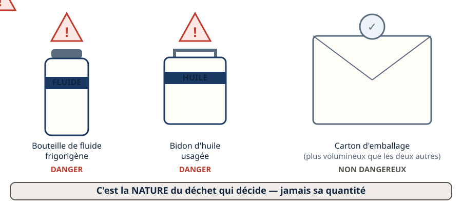
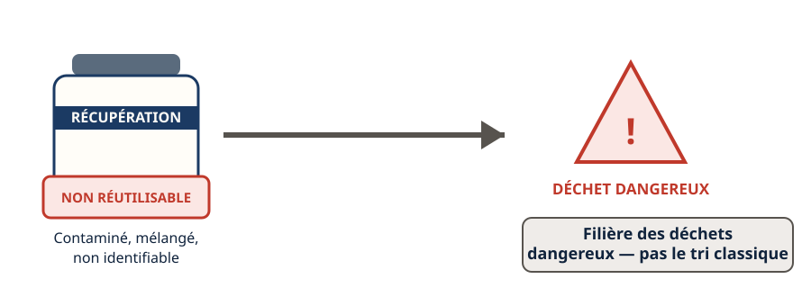
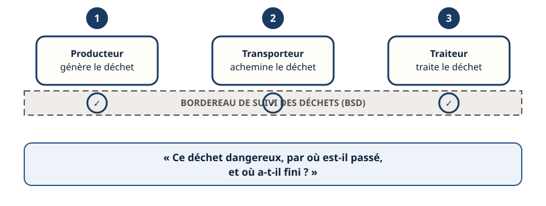
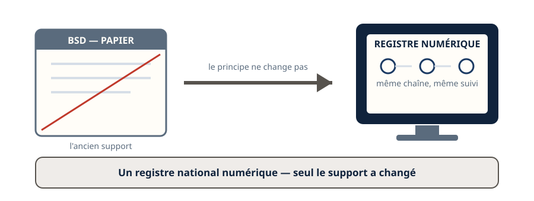
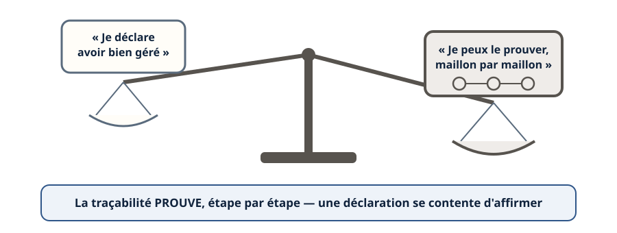
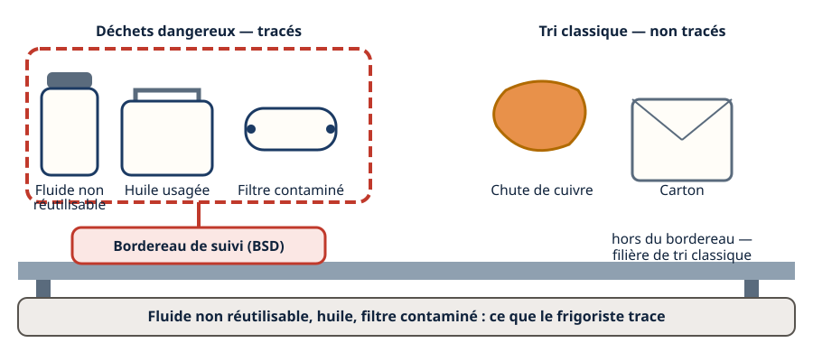
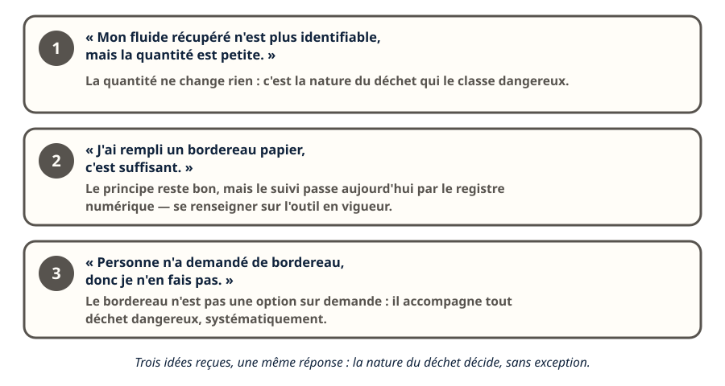
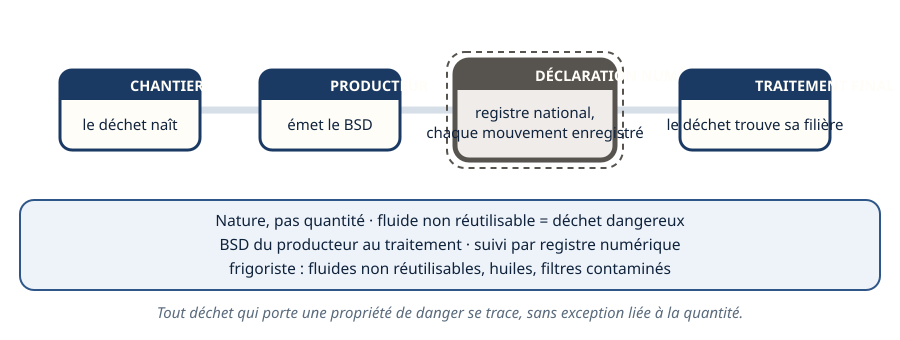

Mini-station commentée · 8 écrans et 4 questions · environ 10 minutes
Objectif
À la fin de la station, vous savez ce qui rend un déchet dangereux, vous savez qu'un fluide récupéré non réutilisable en est un, vous connaissez l'existence et le rôle du bordereau de suivi (BSD) et de sa version numérique, et vous savez ce que la traçabilité prouve.
Chaque écran peut être expliqué à voix haute : le bouton « Écouter » commente ce que vous voyez. Rien n'est dit qui ne soit aussi écrit.
1 / 12
Écran 1 sur 8
Ce qui rend un déchet dangereux
Un déchet est dit « dangereux » quand il porte une propriété de danger : il peut être inflammable, toxique, corrosif, ou nocif pour les milieux naturels. Ce n'est pas une question de quantité, mais de nature.
Une huile usagée, un fluide frigorigène non réutilisable, un solvant : leur nature seule suffit à les classer dangereux, même en petite quantité.

Le carton est plus gros, mais seuls les deux autres portent une propriété de danger.
Écran 2 sur 8
Le fluide récupéré non réutilisable : un cas concret
Le métier du frigoriste croise ce cas en premier : un fluide récupéré qui n'est pas réutilisable — contaminé, mélangé, non identifiable — devient un déchet, et c'est un déchet dangereux.
Il suit alors la filière des déchets dangereux, pas une benne de tri classique.

Non réutilisable : le fluide change de statut, il devient un déchet dangereux.
Écran 3 sur 8
Le bordereau de suivi : la mémoire du déchet dangereux
Le bordereau de suivi des déchets (BSD) accompagne un déchet dangereux à chaque étape : sa production, son transport, son traitement. Chaque intervenant y appose sa trace.
C'est ce document qui permet de répondre à la question : « ce déchet dangereux, par où est-il passé, et où a-t-il fini ? ».

Trois intervenants, un même document qui les traverse tous.
Écran 4 sur 8
Le bordereau existe aujourd'hui sous forme numérique
Le BSD papier a laissé place à un registre national numérique : chaque mouvement de déchet dangereux y est enregistré, consultable, et ne peut plus se perdre dans une pile de papiers.
Le principe ne change pas — assurer la traçabilité — seul le support a changé.

Même chaîne, même suivi : seul le support a changé.
Écran 5 sur 8
Pourquoi la traçabilité, et pas seulement une déclaration
Une simple déclaration dirait « j'ai bien géré mes déchets ». La traçabilité va plus loin : elle prouve, étape par étape, que chaque déchet dangereux a bien atteint une filière autorisée.
C'est ce qui permet à un producteur de démontrer sa responsabilité, même longtemps après (voir la station Responsabilités).

Le plateau qui pèse le plus lourd est celui qui peut se prouver.
Écran 6 sur 8
Ce qu'un frigoriste trace vraiment
Sur un chantier de froid, les déchets qui exigent un suivi tracé sont d'abord : les fluides frigorigènes récupérés non réutilisables, les huiles usagées, et certains filtres déshydrateurs contaminés.
Le cuivre, les cartons, le bois trié n'entrent pas dans ce suivi : ils suivent la filière classique de tri (voir la station Trier : les 7 flux).

Dans le cadre rouge, ce qui se trace. En dehors, ce qui suit le tri classique.
Écran 7 sur 8
Le raisonnement : trois situations de terrain
« Mon fluide récupéré n'est plus identifiable, mais la quantité est petite. » → La quantité ne change rien : c'est la nature du déchet qui le classe dangereux.
« J'ai rempli un bordereau papier, c'est suffisant. » → Le principe reste bon, mais le suivi passe aujourd'hui par le registre numérique — se renseigner sur l'outil en vigueur.
« Personne n'a demandé de bordereau, donc je n'en fais pas. » → Le bordereau n'est pas une option sur demande : il accompagne tout déchet dangereux, systématiquement.

Trois idées reçues, une même réponse : la nature du déchet décide, sans exception.
Écran 8 sur 8
Bilan et le réflexe
Un déchet est dangereux par sa nature, pas par sa quantité.
Un fluide récupéré non réutilisable est un déchet dangereux.
Le BSD trace un déchet dangereux du producteur au traitement final.
Le suivi passe aujourd'hui par un registre numérique.
Un frigoriste trace surtout ses fluides non réutilisables, ses huiles usagées, ses filtres contaminés.
Le réflexe : tout déchet qui porte une propriété de danger se trace, sans exception liée à la quantité.

Du chantier au traitement final, la chaîne ne se rompt pas.
Question 1 sur 4
Qu'est-ce qui classe un déchet comme « dangereux » ?
Rappel de l'écran 1 — la nature, pas la quantité.
Question 2 sur 4
Un fluide frigorigène récupéré, contaminé et non identifiable, est :
Rappel de l'écran 2 — non réutilisable, donc déchet dangereux.
Question 3 sur 4
À quoi sert le bordereau de suivi des déchets (BSD) ?
Rappel de l'écran 3 — un document qui traverse trois intervenants.
Question 4 sur 4
Parmi les déchets d'un chantier de froid, lequel exige un suivi tracé ?
Rappel de l'écran 6 — dans le cadre rouge, ce qui se trace.
Les correspondances de la station
F-Gaz 3 — le règlement (UE) 2024/573 (même sous-ligne)
— la récupération obligatoire du fluide avant élimination de l'équipement, en amont de ce que
devient ce fluide s'il n'est pas réutilisable.
Traçabilité (sous-ligne Fluidique & thermique, en préparation).
Impact environnemental (en préparation).
F-Gaz 3 est ouverte : le lien fonctionne. Les deux autres stations sont
en préparation sur le plan du réseau.